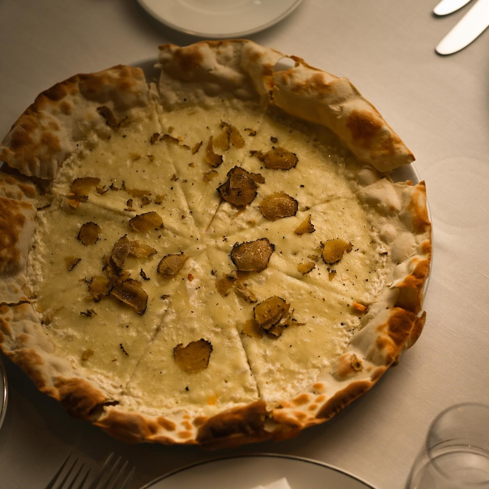

Bun venit la Italiano Ristorante, locul unde gastronomia italiană
prinde viață în fiecare farfurie! Situat în inima orașului nostru,
Italiano Ristorante este mai mult decât un simplu restaurant -
este o călătorie culinară în Italia, plină de arome autentice și
bucurie gastronomică.
|
 |
Într-o lume plină de arome și gusturi rafinate,
Italiano Ristorante strălucește ca o perlă a gastronomiei italiene
autentice. Cu rădăcini adânc în tradiția culinară a Italiei, noi
aducem în fiecare zi pe mesele noastre bucate care încântă simțurile
și încălzesc inimile. Veniți și descoperiți un univers de savoare,
unde pasiunea pentru arta culinară se întâlnește cu ospitalitatea
desăvârșită, creând o experiență de neuitat pentru toți cei care ne
trec pragul.